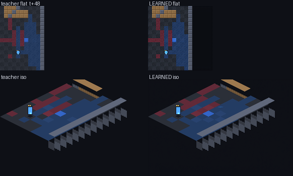

The 5.3M-parameter Logic Engine is the game server: it predicts the entire typed world state each tick, and every camera — top-down or isometric — decodes from that one prediction.
Every frame below shows the same predicted state rendered four ways — teacher and learned renderer, in flat 2D and isometric 2.5D. The Logic Engine rolls fully autoregressively (its own prediction is its only input); the two renderers were trained independently and can be swapped at runtime without touching the dynamics.
t+0 … t+96 of a closed-loop rollout. Renderers from scratch: flat PSNR 40.0 / SSIM 0.936 · iso PSNR 51.3 / SSIM 0.9987 on held-out states.
Left: teacher render of the reference state. Right: teacher render of the predicted state, fed back on itself for 128 ticks — paint territory, crates, beams and players tracked with no state replacement and no rule repair. Bottom rows: learned views.
The environment itself: an 8-player capture-the-flag world with beam combat, territory painting that alters physics (health & speed), destructible walls, flag carry/drop/capture, death & respawn — every mechanic learned, none hard-coded.
| distractors injected m | 4 | 12 | 24 | 48 |
|---|---|---|---|---|
| PIE — change in base-roster prediction | 0.00000 | 0.00000 | 0.00000 | 0.00000 |
Injecting up to 48 extra players outside every influence radius changes the prediction for the original roster by exactly nothing — bit-identical through the real tokenizer, context builder and greedy decoder (20 trials/cell). Trained only on N ≤ 8, the model still places 77% of 1,024 players exactly right in one step — a 128× population extrapolation with no cliff.
Final-recipe headline (3 random seeds, matched cells vs the faithful reproduction): position accuracy 0.845 ± 0.009 (baseline 0.700), death Event-F1 0.747 ± 0.039 (baseline 0.329), and single-step joint-contradiction rate exactly zero on the small and mid arenas across all three seeds (0.03 ± 0.02 overall; one tiny-arena cell retains a residue) — the curriculum essentially solved one-step joint coherence. Long-horizon cumulative contradictions remain the stated open frontier. The same single intervention also protects extreme population extrapolation: at 128 players (16× the training population) the curriculum-trained model answers 80% of positions where plain long training collapses to 66–74%.
The defect we set out to show is real. With per-player position accuracy at 1.000, the assembled state still contradicts itself on 17–50% of ticks (two players on one tile, health inconsistent with the paint under it) — and the contradiction rate rises monotonically with population, saturating at N ≥ 128. The mean-field record factorization, not model inaccuracy, is the cause: within-record coherence violations are exactly zero.
Our first fix failed, and we report it. Conditioning each record on its interaction-component predecessors (chain rule) did not reduce joint contradictions and destroyed death-event prediction (Event-F1 0.71 → 0.05). The diagnosis reshaped the project: the tie-break information was already in each record's context window — the residual error is a utilisation failure, which training emphasis and on-policy correction target instead.
▶ Play right now, in this browser: play.html runs a faithful JavaScript port of the environment — zero install. Connect it to a tunnelled world-model server and the same page switches to playing inside the learned model, multiplayer.
MASS trains a separate tokenizer, embedding table and weight set per game. We appended
one opt-in GAME token to the record schema and trained a single 5.3M-parameter
model on CaptureTheFlag + KingOfTheHill jointly (same arenas, different objective and
scoring dynamics). The multi-game model does not merely hold both rule sets — it beats the
single-game baseline at the baseline's own game, on every paired cell:
| CTF, paired vs single-game baseline | baseline | multi-game |
|---|---|---|
| full-state exact, H=1 (sm 40×40, 8 players) | 0.500 | 1.000 |
| position acc, H=32 (xs 24×24) | 0.576 | 0.951 |
| position acc, H=32 (sm 40×40) | 0.700 | 0.906 |
| position acc, H=32 (md 72×72) | 0.783 | 0.904 |
| joint-contradiction rate, H=32 (md 72×40) | 0.148 | 0.000 |
| position acc, H=128 (sm 40×40) | 0.223 | 0.404 |
On its second game the same checkpoint holds the official 23×23 arena for 128 autoregressive ticks at position accuracy 0.810 — the best long-horizon number in the project — and extrapolates to populations it never saw (trained at N ≤ 8; position accuracy 0.98–1.00 at N = 32, 0.982 at N = 64). Positive transfer across games is a capability the per-game-weights design of the original cannot express. Open weakness, kept honest: cumulative joint-contradiction rate over very long horizons (H = 128) remains the frontier.
The live server below now runs this multi-game checkpoint: pick a KotH world in the world selector and you are playing King of the Hill inside the learned model.
We ran the scaling ablation MASS never did: 5× the training steps (20k → 100k) and 3.5× the parameters (5.3M → 18.5M), on matched evaluation cells.
| metric (matched-cell mean) | 20k base | 100k steps | 18.5M params |
|---|---|---|---|
| position accuracy | 0.700 | 0.770 | 0.789 |
| death Event-F1 | 0.329 | 0.593 | 0.560 |
| paint IoU | 0.838 | 0.891 | 0.895 |
| joint-contradiction rate ↓ | 0.201 | 0.251 | 0.229 |
Scale buys in-distribution accuracy but does not repair joint coherence — the contradiction rate gets worse. The only intervention that fixed it is the interaction-structured sampling curriculum (previous section). That closes the loop on the headline claim: the mean-field defect is not a capacity or data-budget problem.
And a negative surprise we report in full: long training collapses extreme population extrapolation. Trained at ≤8 players and tested at 1024, the 20k model still answers 77% of positions at H=1; the 100k models drop to 27–36%. The multi-game curriculum recovers a large part of it (45.1%) while also being best in-distribution — a genuine trade-off, not a free lunch, and the population-diverse training arm now running tests whether it can be repaired outright.
MASS's strongest non-typed baseline is a dense per-cell U-Net (B-UN). We reproduced it at 3.4M parameters on the same corpus and budget, then — unlike the original — scored both carriers on the same identity-free metric (position-multiset F1). The result is an honest split verdict:
| H=32 | H=128 | death Event-F1 | identity (X-view) | |
|---|---|---|---|---|
| typed engine (5.3M) | 0.89–0.92 | 0.36–0.39 | 0.41–0.83 | yes |
| dense U-Net (3.4M) | 0.90–0.96 | 0.80–0.83 | 0.07–0.40 | structurally impossible |
| per-view video (8.5M) | 0.57 | — | — | X-view 0.21 |
| shared-latent video (10.9M) | 0.60 | — | — | X-view 0.25 |
X-view = cross-view inconsistency of the parsed overlap between two players' cameras (typed models are exactly 0 by construction — every view decodes from ONE state). The pooled shared latent does not repair it: an unstructured latent cannot enforce view consistency the way an authoritative state does. Both video baselines trained on the same corpus and budget; full four-carrier table lands with the paper.
At long horizon the dense carrier wins raw occupancy — typed autoregressive errors accumulate as identity displacement, while dense predicts each cell independently so the pattern stays put. But the typed carrier keeps everything a multiplayer server actually needs and dense structurally cannot have: per-player identity, events, off-board state (respawn timers, cooldowns), and addressable queries. The original paper's Snake numbers (dense Pos = 0.002) undersold this baseline badly; our table reports what each carrier is genuinely good at.
The live demo is a FastAPI + WebSocket server on a GPU node. Every browser that connects claims its own player (teams auto-balanced); all human keypresses merge into one joint action, the learned model advances the world once per tick, and every seated player's camera is decoded from that single prediction in one batched renderer pass — the many-views-one-state contract, live. An optional shadow engine (same actions, same randomness) shows the divergence between learned dynamics and ground-truth physics while you play.
# on the cluster sbatch slurm/demo_server.sbatch # prints node + port in the log # on your laptop ssh -L 8777:<node>:8777 <cluster> # then open http://localhost:8777

WASD move · Q/E turn · J wide beam · K long beam · touch controls on mobile · live event feed (eliminations, flag steals, scoring) derived from the model's own state deltas. Worlds from the official 23×23 Melting Pot arena up to 72×72; per-tick model latency 0.25–0.5 s on one (shared) H200. World selector includes CTF, King-of-the-Hill, and the new Nomad rule set — a moving hill whose position and hold-counter are part of the typed state itself, so the model must predict the evolution of the rules' state, not just the pieces (multi-game brain for Nomad currently training).
A schema declares typed records (players, flags, 8×8 terrain chunks, global). Each tick, a decoder-only Transformer (width 256, 6 layers) predicts every record's next state from its own fields, a local context window that includes visible agents' actions and tie-break priorities, and the recorded exogenous randomness; records assemble into the one authoritative state that is simultaneously the recurrent memory, the synchronization object, the evaluation target and the source of every rendered view. Cross-record coherence, event F1, counterfactual effect transfer and population invariance are all measured directly on the predicted state — before a single pixel is rendered.
Built on the shoulders of MASS (2608.06257). Scene rules: Melting Pot (Apache-2.0). All numbers in this page are from held-out episodes; the negative result in §4 is pre-registered and reported as-is.